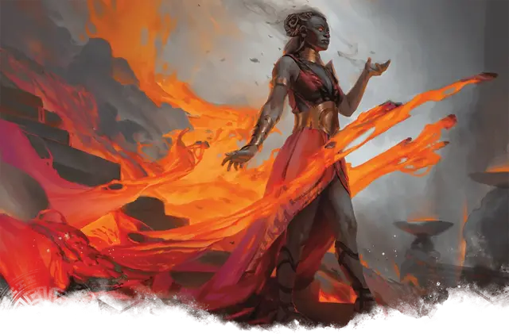

Оракул
Oracle
Средний Гуманоид, любое мировоззрение

Класс Доспеха 15 (Благословения богов)
Хиты 44 (8к8 + 8)
Скорость 30 футов
| мод | спас | ||
|---|---|---|---|
| СИЛ | 10 | +0 | +0 |
| ЛОВ | 14 | +2 | +2 |
| ТЕЛ | 12 | +1 | +1 |
| мод | спас | ||
|---|---|---|---|
| ИНТ | 13 | +1 | +1 |
| МДР | 16 | +3 | +5 |
| ХАР | 15 | +2 | +4 |
Навыки Проницательность +5, Религия +5, Убеждение +4
Чувства пассивное Восприятие 13
Языки Общий, Небесный
Опасность 4 (1100 опыта)
Бонус мастерства +2
Особенности
Благословения богов. В то время как оракул не носит ни доспехи, ни щит, к КД прибавляется его модификатор Мудрости. Кроме того, существо, которое попадает по оракулу рукопашной атакой, находясь в пределах 5 футов от него, получает 9 (2к8) урона силовым полем.
Врождённое колдовство. Базовой характеристикой оракула является Мудрость (Сл спасброска от заклинания 13, +5 к попаданию атаками заклинаниями). Он может накладывать следующие заклинания, не нуждаясь в материальных компонентах:
• Неограниченно: указание [guidance], свет [light], чудотворство [thaumaturgy];
• 3/день каждое: благословение [bless], направляющий снаряд [guiding bolt], лечащее слово [healing word], удержание личности [hold person];
• 1/день каждое: гадание [augury], наблюдение [scrying].
Действия
Мистическое прикосновение. Рукопашная атака заклинанием: +5 к попаданию, досягаемость 5 футов, одна цель. Попадание: 6 (1к6 + 3) урона силовым полем.
Реакции
Божественное откровение (3/день). Когда оракул или существо, которое он может видеть, совершает бросок атаки, спасбросок или проверку характеристики, оракул может дать этому броску преимущество или помеху.
Описание
Оракулы обладают способностью интерпретировать узоры и язык Нюкты, угадывая по ним течение судеб и волю богов. Большинство из этих одаренных — или проклятых — смертных общаются с одним богом, интерпретируя его намерения для всего мира. Другие не связаны с богом и наблюдают за ночным небом, читая Нюкту как огромный загадочный свиток для получения информации.
Божественное влияние. Точно так же, как оракулы ищут понимания в толковании божественного, так и боги иногда пытаются манипулировать миром с помощью оракулов. Иногда бог может говорить напрямую, будь то с помощью драматических представлений или прямого владения своим слугой. Хотя слова божества могут быть пропитаны метафорами, если бог желает прояснить свои намерения, он часто находит драматические способы донести свои мысли.
Толкователи знамений. Оракулы обладают беспрецедентным опытом в предсказании божественных прихотей по загадочным видениям и мирским силам. Те, кто получает божественные знамения, могут обратиться к оракулу, чтобы получить более четкое представление о намерениях бога.
Однако поиск оракула или человека, имеющего опыт в интерпретации определенных типов видений, может оказаться самостоятельным приключением.